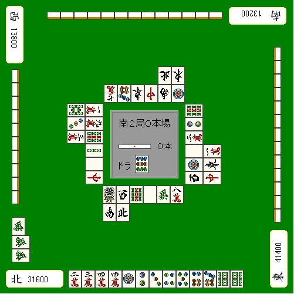
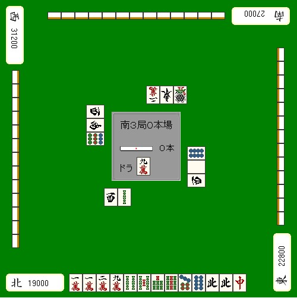
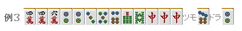
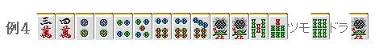
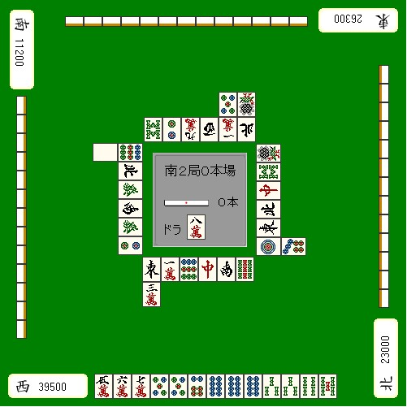

【日本麻雀讲座译文】状况判断5—状况与做牌（3）
【日本麻雀讲座译文】状况判断5—状况与做牌（3） · 原网页
译文与整理说明
保留原中文署名和正文。牌图转录如复用已验收 PDF，逐图保留原候选与像素核对出处。自动校对不等于用户审核。
免责声明： 以下文章的著作权等各种权利归原作者所有，翻译 By SeventhTG（XD）。如果你喜欢本文并有幸让你产生了转载的想法，请注明原作者、原文地址以及译者，谢谢。 原文地址：http://beginners.biz/joukyou/joukyou05.html ------------------------------------------------------------------------------------原文段落
这一节来试试结合点棒状况进行做牌。原文段落
原点以下注重打点，原点以上注重速度，这是比较基本的考虑方法。原文段落
------------------------------------------------------------------------------------原文段落
提高打点原文段落
------------------------------------------------------------------------------------原文段落
虽说要提高打点，但是老是过于勉强地去做手役，原文段落
和上位的差距会越来越大。原文段落
1.门清立直原文段落
2.用宝牌原文段落
3.混一色原文段落
这三个就是提高打点的核心了。原文段落
例1：原文段落

完整牌例文字与牌编码
场况：南2局0本场。中央立直棒计数：0根；“宝牌”标签右侧为9p。 座位与点数：屏幕下方北家31600；右方东家41400；上方南家13200；左方西家13800。 下方手牌，从左到右：2m 3m 4m 4m 1p 2p 3p 4p 5p 6p 7p 6s 6s。上方、右方各有13张背面朝外的暗牌，左方有10张。 左家副露位于屏幕左下：6z 6z 6z。从屏幕上至下，第一张竖放，第二、三张横放；第一张相对于另外两张横置。 下方牌河：第一行从左到右为1s 3z 9s 5z 6z 8m；第二行位于第一行左端下方，从左到右为2z 4z。 上方牌河：靠近中央的一行，从屏幕左到右为?m 7p 1z 7z 2z 1p；其上方、对齐右端的两张，从屏幕左到右为4z 1z。?m为点数未能可靠辨认的万子牌。 右方牌河：内列从屏幕上到下为9s 2p 3m 5z 1p 3z；外列对齐内列下端，从上到下为1m 1z 7z。 左方牌河：内列从屏幕上到下为1m 9m 9s 2s 5z 7z；外列对齐内列上端，从上到下为8s 3p 3m。 各家牌河牌面分别朝向各自玩家。 原图未显示的信息：上方牌河靠近中央一行的屏幕最左侧万子牌：无法可靠辨认具体点数，转录为?m。
想要高打点，立直是最近的一条路。原文段落
例1虽然赢了点点棒，但是现在正在和下家争TOP。原文段落
吃了上家的3万也许要和牌是没什么问题，但是和TOP的差距是基本没缩小。原文段落
这种情况是应该要凹门清立直的牌。原文段落
当和自己争TOP的玩家是亲家时，用食断等小牌让他安全下庄，你这是没搞清楚情况吧= =原文段落
总结、理论：原文段落
自己的目标是亲家时，以打点为重是基础。原文段落
------------------------------------------------------------------------------------原文段落
例2：原文段落

完整牌例文字与牌编码
场况：南3局0本场。中央立直棒计数：0根；“宝牌”标签右侧为9m。 座位与点数：屏幕下方北家19000；右方东家22800；上方南家27000；左方西家31200。 下方手牌，从左到右：1m 1m 2m 9m 4s 5s 7s 9s 7p 8p 4z 4z 7z。其余三家各有13张背面朝外的暗牌。 下方牌河，从左到右：3z 2s。 上方牌河，从屏幕左到右：2m 1z 1s。 右方牌河，从屏幕上到下：8p 5z 3z。 左方牌河，从屏幕上到下：3z 2z 9p。 各家牌河牌面分别朝向各自玩家。
想要副露提高打点的话，强行地使用宝牌也是一招。原文段落
像例2这样的四位需要打点的情况的话，原文段落
吃这张9饼向全带方向进军是比较有意思的。原文段落
目的就是为了强行用上宝牌的9万，做成“全带三色北DORA1”或者“全带北DORA2”的满贯。原文段落
虽然说这个副露也许有点远，但是比起门清，这样副露和满贯的几率不是要高一些吗？原文段落
------------------------------------------------------------------------------------原文段落

完整牌例文字与牌编码
左侧标签：例3。 手牌从左到右：4m 4m 6m 2p 2p 3p 5p 6p 7s 8s 7z 7z 7z。 手牌右侧依次为：“摸入”标签、7p、“宝牌”标签、2p。摸入的7p与原手牌分开放置，宝牌2p位于最右侧。
自己四位的时候，失去打点与速度平衡的人往往比较多。原文段落
哪怕自己多么想要打点，例3也只有切6万这一手。原文段落
如果自己不想和小牌的话，不鸣牌就可以了。原文段落
门清立直的话，哪怕切掉一张宝牌也有5200点，自摸的话毫无疑问的满贯。原文段落
非常不推荐切掉3饼确定宝牌的对子。 原文段落
------------------------------------------------------------------------------------原文段落
提高速度原文段落
------------------------------------------------------------------------------------原文段落

完整牌例文字与牌编码
左侧标签：例4。 手牌从左到右：3m 4m 2p 2p 4p 5p 6p 6p 7p 1s 1s 5s 7s。 手牌右侧依次为：“摸入”标签、6s、“宝牌”标签、1s。摸入的6s与原手牌分开放置，宝牌1s位于最右侧。
这种牌切掉2饼进入平和一向听是比较通俗的打法。原文段落
但是如果是南3局，自己TOP，无论如何也想让牌局前进的话。原文段落
拆掉宝牌对子就是很巧妙的一手。原文段落
当然，既然切了宝牌，2、5万；5、8饼的吃听可不要错过了。原文段落
------------------------------------------------------------------------------------原文段落
例5原文段落

完整牌例文字与牌编码
场况：南2局0本场。中央立直棒计数：0根；“宝牌”标签右侧为8m。 座位与点数：屏幕下方西家39500；右方北家23000；上方东家26300；左方南家11200。 下方手牌，从左到右：5m 6m 7m 5p 5p 6p 8p 8p 8p 2s 2s 4s 5s。其余三家各有13张背面朝外的暗牌。 下方牌河：第一行从左到右为1z 1m 9p 7z 2z 9s；第二行在第一行最左一张下方，为3m。 上方牌河：靠近中央的一行，从屏幕左到右为8s 2p 9m 3z 2m 4z；其上方、对齐右端的两张，从屏幕左到右为5p 1s。 右方牌河：内列从屏幕上到下为1s 8s 7z 4z 1z 1p；外列在内列最下方一张的右侧，为7p。 左方牌河：内列从屏幕上到下为9p 4z 6z 2z 6z 2p；外列在内列最上方一张的左侧，为5z。 各家牌河牌面分别朝向各自玩家。
对自己TOP地位威胁最大的就是现在处于第二位的亲家。原文段落
绝对不能让他连庄。原文段落
通畅情况下应该立直的牌，这里也要副露从而阻止亲家连庄。原文段落
因此，这里应该碰5饼听牌。原文段落
至于听牌的选择嘛，选择容易被打出的6、7饼比较好吧。原文段落
（待续）原文段落